从0开始卷出一个新项目之瑞萨RA6M5
一、范围
1.1 初次在项目中使用瑞萨RA
1.2 用过ST等但不熟悉瑞萨环境
1.3 对嵌入式开发感兴趣
二、目的
通过boot+app两个工程源码和开发环境的分享，使得瑞萨RA6M5快速用于项目开发。
三、瑞萨RA6M5简介
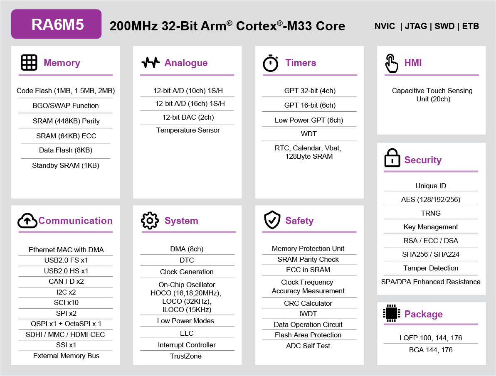
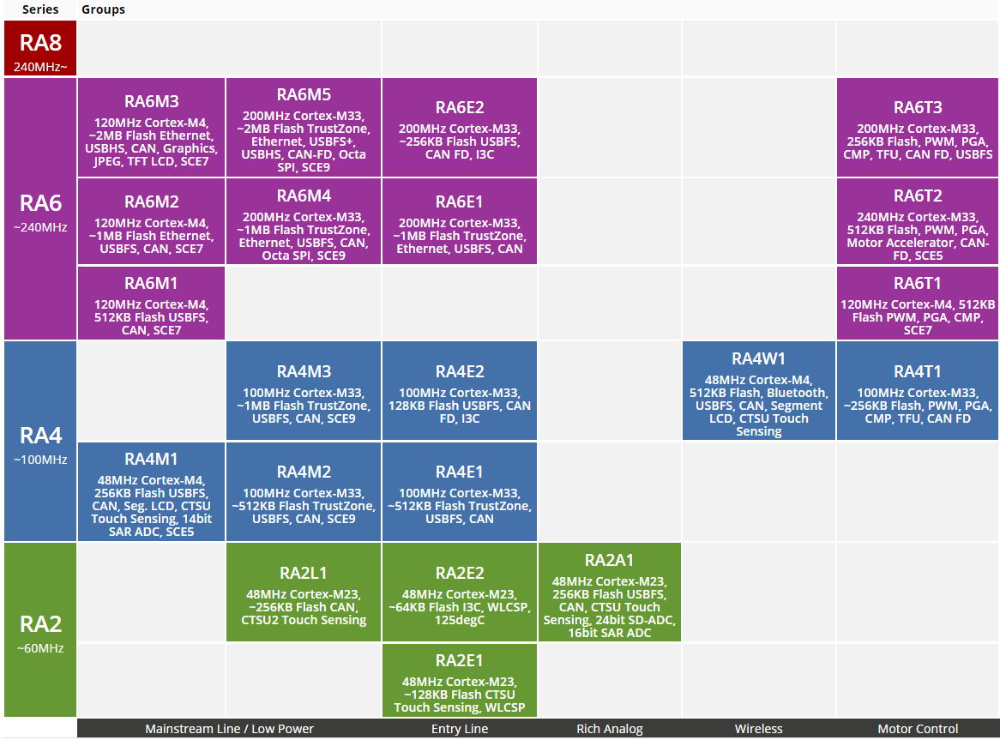
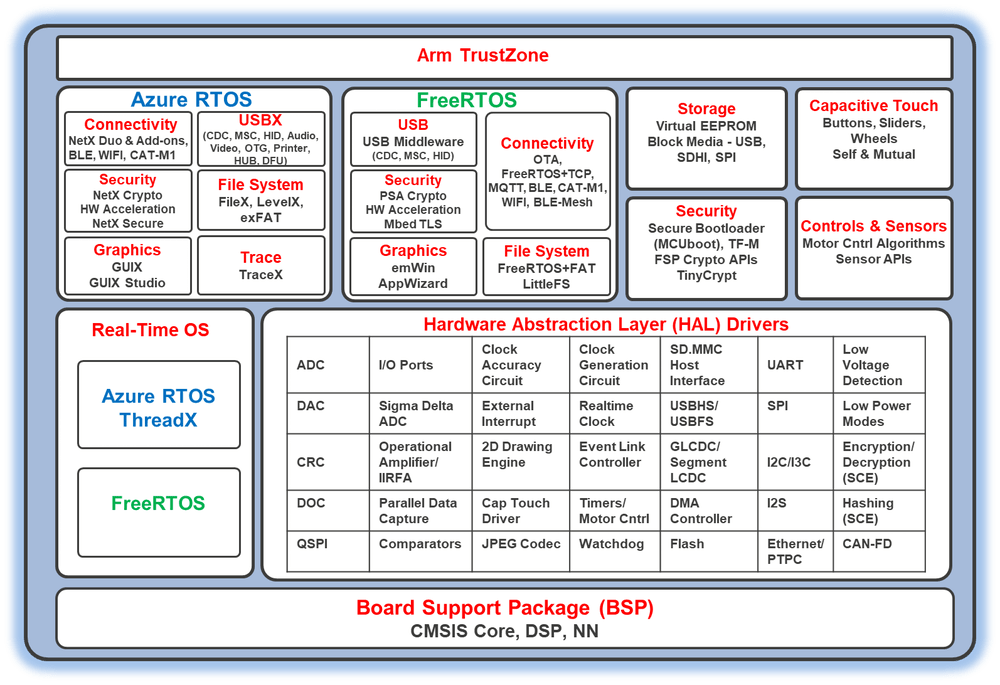
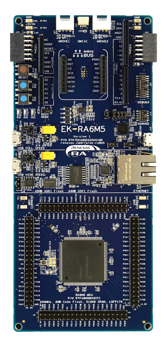
四、瑞萨RA6M5应用
新能源
充电桩
BMS
DTU RTU
蜂窝云连接系统
交流变频器/GP 逆变器解决方案
语音识别和智能控制
基于 ROS 的机器人本体控制器
micro-ROS Solutions
Ubiquitous AI Edge Trust for RA MCUs
工业用嵌入式可编程逻辑控制器 (PLC)
无线多通道隔离数据记录器
ABUP UA差分升级解决方案
Remote Predictive Maintenance Solution
远程预测性维护
有线以太网应用
需要增强安全功能的产品（火灾探测、防盗检测、面板控制）
表计类产品（电力，自动抄表）
工业应用（机器人、开门器、缝纫机、自动售货机、UPS）
HVAC（供暖、空调、锅炉控制）
五、分享内容
5.1 工程框图
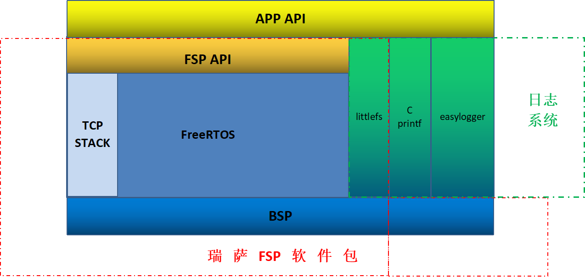
5.1 flash分区

5.1 软件资源

六、硬件设计
6.1 资料来源
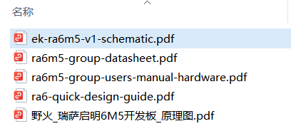
6.1.1 官方：RA6 快速设计指南、datasheet、User’s Manual、ek-designpackage
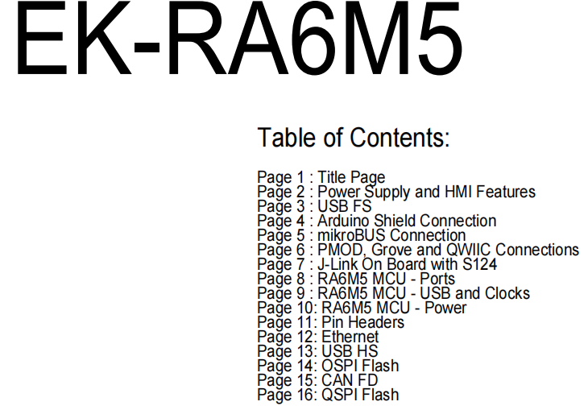
6.1.2 第三方：野火启明6M5开发板 https://doc.embedfire.com/mcu/renesas/fsp_ra/zh/latest/index.html
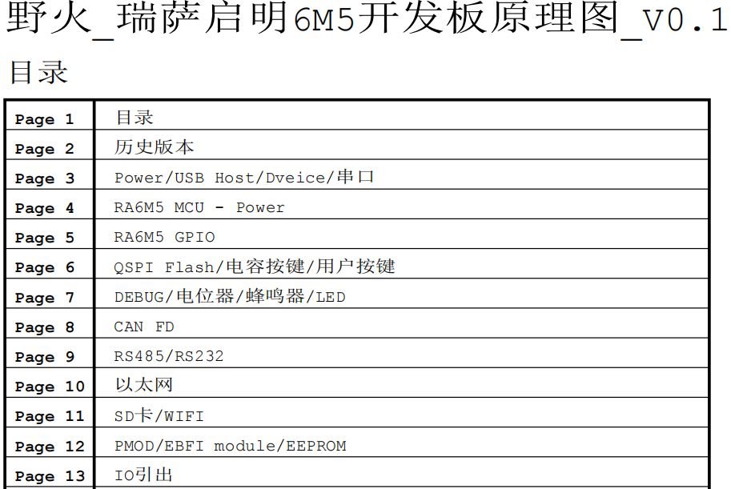
6.1.3 嘉立创、b站等
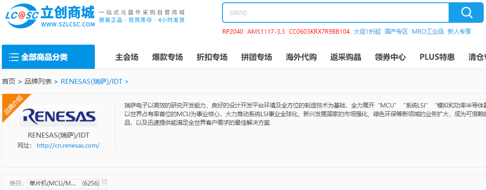
6.2 各部分设计
6.2.1 电源
VSS VSS **VCL** AVCC AVSS VREF VBAT
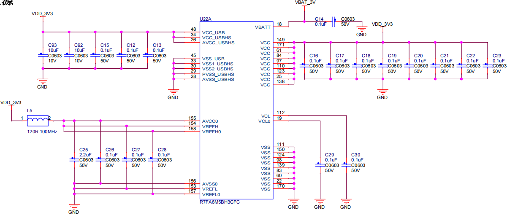
6.2.2 时钟
24M 32.768K(**注意未使用**) 25M

6.2.3 调试接口
建议预留JTAG，非单SWD，上拉
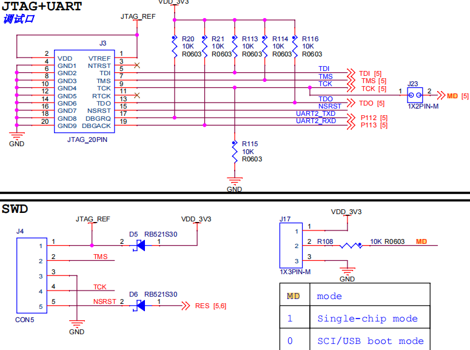
6.2.4 复位

6.2.5 串口、CAN、以太网
上拉
6.2.6 引脚分配
datasheet

rasc分配导出表格

6.2.7 未使用引脚

6.2.8 原理图 PCB
库文件
七、软件设计
7.1 配置分析
7.1.1 IDE等开发环境
| 集成开发环境 IDE |
e2studio | fsp_v4_0_0_e2s | MDK: 5.31 |
IAR: 8.50.6 |
|---|---|---|---|---|
| 软件包 | FPS | FPS | RA Smart Configurator(RASC) fsp_v4_1_0_e2s |
RASC |
| 编译工具链 Toolchain |
GCC Compiler | GCC Compiler | ARM Compiler | IAR Compiler |
| IDE特点 | 支持多种RenesasMCU 安装中下载FPS和Toolchain等等 |
RA系列一键安装 包括了FPS和Toolchain |
RASC嵌入MDK FPS和Toolchain |
RASC嵌入IAR FPS和Toolchain |
| J-link烧写软件和硬件 | SEGGER J-Link: 7.68b |
SEGGER J-Link: 7.68b |
SEGGER J-Link: 7.68b |
SEGGER J-Link: 7.68b |
| Renesas烧写软件 | Renesas Flash Programme（RFP） | RFP | RFP | RFP |
| Renesas仿真硬件 | E2 emulator Lite E2 emulator |
E2 emulator Lite E2 emulator |
7.1.2 创建两个工程
使用e2sstudio创建boot+app两个带rtos的工程 注意芯片型号和编译工具 创建成功后debug运行测试
7.1.3 修改link文件
/script
fsp_boot.ld
memory_regions_boot.ld
fsp_app.ld
memory_regions_app.ld
RAM_START = 0x20000000;
RAM_LENGTH = 0x80000;
FLASH_START = 0x00000000;
FLASH_LENGTH = 0x010000;
DATA_FLASH_START = 0x08000000;
DATA_FLASH_LENGTH = 0x2000;
OPTION_SETTING_START = 0x0100A100;
OPTION_SETTING_LENGTH = 0x100;
OPTION_SETTING_S_START = 0x0100A200;
OPTION_SETTING_S_LENGTH = 0x100;
ID_CODE_START = 0x00000000;
ID_CODE_LENGTH = 0x0;
SDRAM_START = 0x90000000;
SDRAM_LENGTH = 0x0;
QSPI_FLASH_START = 0x60000000;
QSPI_FLASH_LENGTH = 0x4000000;
OSPI_DEVICE_0_START = 0x68000000;
OSPI_DEVICE_0_LENGTH = 0x8000000;
OSPI_DEVICE_1_START = 0x70000000;
OSPI_DEVICE_1_LENGTH = 0x10000000;
unsigned long Boot_Addr = 0x10000;//memory_regions_boot.ld FLASH_LENGTH
printf("\n**************************************\n");
printf( "**********JUMP TO APP:0x%lX**********\n", Boot_Addr);
printf( "**************************************\n");
//close any peripherals before do_boot
g_uart9.p_api->close(&g_uart9_ctrl);
R_FLASH_HP_Close(&g_flash0_ctrl);
//jump
do_boot(Boot_Addr);
printf("this message cant print!\n");
flash分区
7.1.4 链接elf
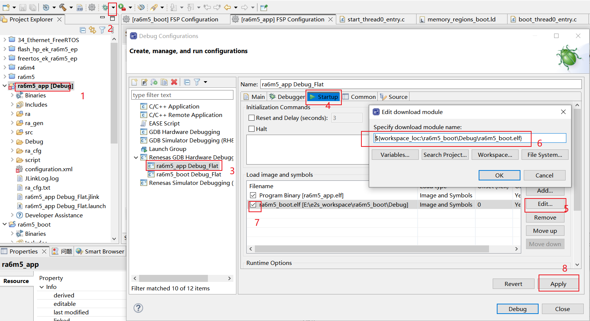
增加jump函数 测试debug和跳转功能
7.1.5 用FSP添加外设
boot
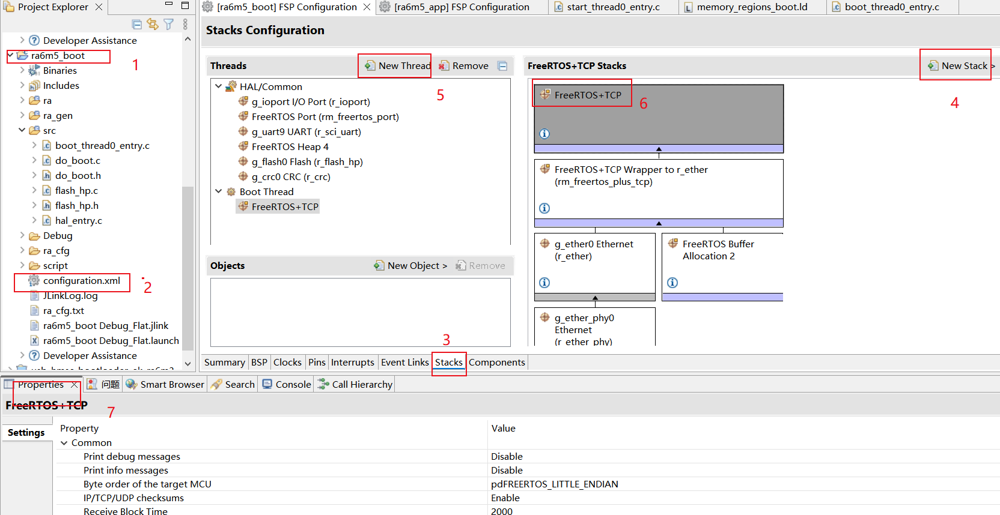
app
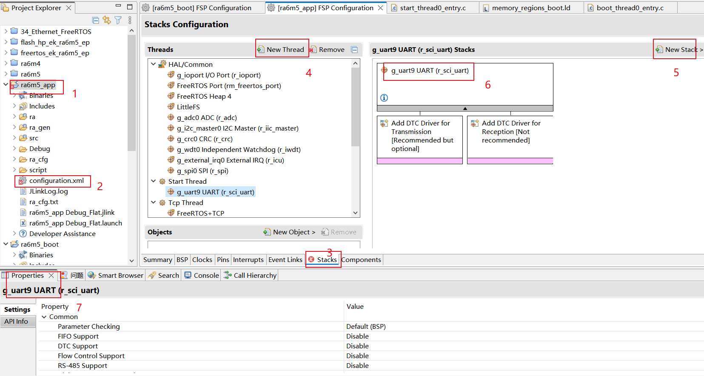
7.1.6 输出文件格式
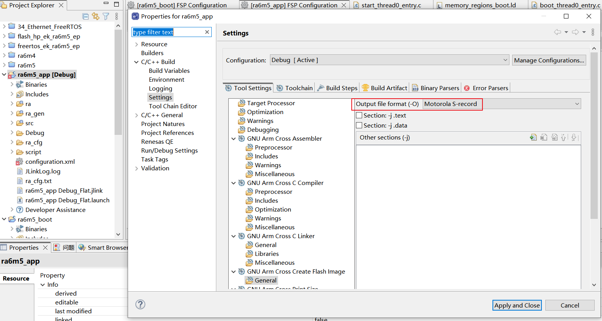
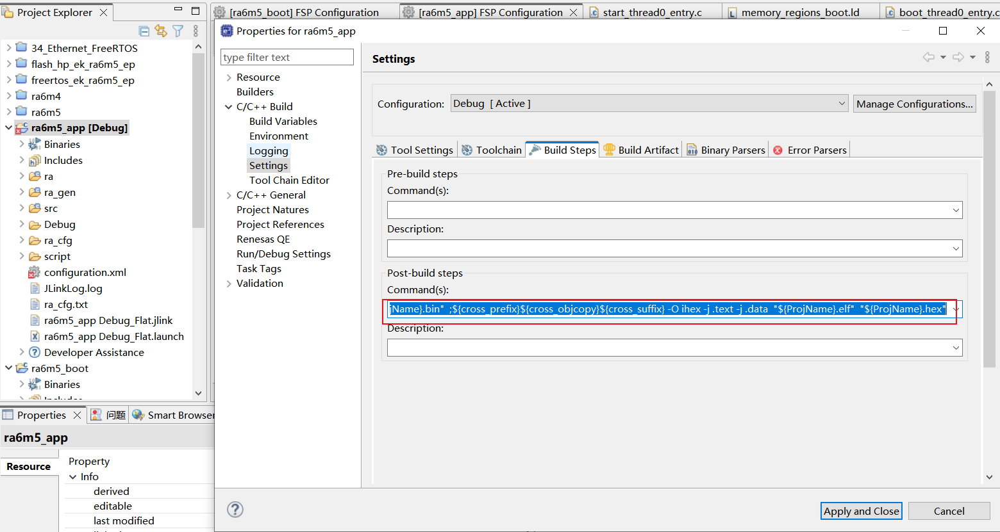
${cross_prefix}${cross_objcopy}${cross_suffix} -O binary -j .text -j .data "${ProjName}.elf" "${ProjName}.bin" ;${cross_prefix}${cross_objcopy}${cross_suffix} -O ihex -j .text -j .data "${ProjName}.elf" "${ProjName}.hex"
7.2 源码分析
7.2.1 框图
7.2.2 boot源码
7.2.2.1 boot源码分析

boot中只有一个线程 //jump，跳转前关闭外设，关闭中断，注意带rtos需要的处理 do_boot(Boot_Addr); 如果不需要通过网络升级固件，则不添加网络协议栈，可用串口升级。
void boot_thread0_entry(void *pvParameters)
{
FSP_PARAMETER_NOT_USED (pvParameters);
///////////////////////////////////////////////////////////////////////////
fsp_err_t err = FSP_SUCCESS;
err = g_uart9.p_api->open(&g_uart9_ctrl, &g_uart9_cfg);
if(err == FSP_SUCCESS)
{
const char *log_uart_init = "\nboot log uart init successed!!!\r\n";
g_uart9.p_api->write(&g_uart9_ctrl, (uint8_t*)log_uart_init, strlen(log_uart_init));
while(uart_send_complete_flag == false)
{;}
uart_send_complete_flag = false;
}
printf("\nprintf redirect successed!!!\ndate:%s\ntime:%s\nfile:%s\nfunc:%s,line:%d\nhello world!\n", __DATE__, __TIME__, __FILE__, __FUNCTION__, __LINE__);
check_reset_status();
/* Open Flash_HP */
err = R_FLASH_HP_Open(&g_flash0_ctrl, &g_flash0_cfg);
/* Handle Error */
if (FSP_SUCCESS != err)
{
printf("R_FLASH_HP_Open API failed=%d", err);
}
uint8_t fwUpgradeFlg = 0;
/*Read code flash data */
readCodeFlash((uint8_t *) FLASH_HP_CF_BLCOK_69, &fwUpgradeFlg, sizeof(fwUpgradeFlg));
printf("fwUpgradeFlg=%d", fwUpgradeFlg);
if(fwUpgradeFlg == 1)
{
//do frameware upgrade over Ethernet or other
//creat frameware thread
//download frameware and check crc
//write fwUpgradeFlg = 1, jump to app or reset
}
else
{
unsigned long Boot_Addr = 0x10000;//memory_regions_boot.ld FLASH_LENGTH
printf("\n**************************************\n");
printf( "**********JUMP TO APP:0x%lX**********\n", Boot_Addr);
printf( "**************************************\n");
//close any peripherals before do_boot
g_uart9.p_api->close(&g_uart9_ctrl);
R_FLASH_HP_Close(&g_flash0_ctrl);
//jump
do_boot(Boot_Addr);
printf("this message cant print!\n");
}
///////////////////////////////////////////////////////////////////////////
/* TODO: add your own code here */
while (1)
{
vTaskDelay (1);
}
}
FreeRTOS-Plus-TCP
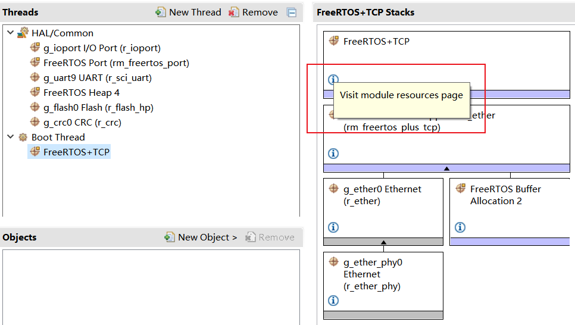
CSDN当前主流的小型嵌入式网络协议栈:https://blog.csdn.net/Simon223/article/details/115673495
freertos对比lwip：https://www.freertos.org/FreeRTOS_Support_Forum_Archive/November_2014/freertos_FreeRTOS_TCP_IP_stack_vs_lwIP_8324ceabj.html
ChatGPT做的几款小型嵌入式网络协议栈的对比，仅供参考
| 协议栈 | 所属组织 | 最早时间 | 最新版本号 | 是否免费商用 | 许可证 | 优劣势 | 所需 Flash | 所需 RAM |
|---|---|---|---|---|---|---|---|---|
| embTCP | lwIP.org（LwIP） | 2005 | 2.5.3 | 是 | BSD | 占用系统资源极少，运行速度快。提供了核心 TCP/IP 功能。 | 30KB | 3.5KB |
| FreeRTOS-Plus-TCP | Amazon Web Services | Unknown | 2.2.2 | 是 | GPL | 集成度高，易于移植，支持 IPv4 和 IPv6。 | 30KB+ | 10KB+ |
| LwIP | Swedish Institute of Computer Science (SICS), lwIP.org | 2001 | 2.1.2 | 是 | BSD | 小巧、灵活，提供了 TCP/IP 功能以及丰富的应用层协议。 | 40KB | 10KB |
| Nanostack | ARM | 2014 | 3.6.0 | 是 | Apache | 可靠性高，提供了易于使用的 API，并支持 IPv6。 | 50KB | 10KB |
| uIP | Adam Dunkels | 2002 | 1.0 | 是 | BSD | 轻量级、支持 IPv4 和 TCP/IP，占用资源非常少。 | 4KB | 1.5KB |
7.2.2.12 boot测试效果
串口日志
boot log uart init successed!!!
printf redirect successed!!!
date:Jun 18 2023
time:20:12:37
file:../src/boot_thread0_entry.c
func:boot_thread0_entry,line:226
hello world!
RSTSR0=0 RSTSR1=0 RSTSR2=0
************************ Cold start ************************
fwUpgradeFlg=255
**************************************
**********JUMP TO APP:0x10000**********
**************************************
7.2.3 app源码
7.2.3.1 app源码分析
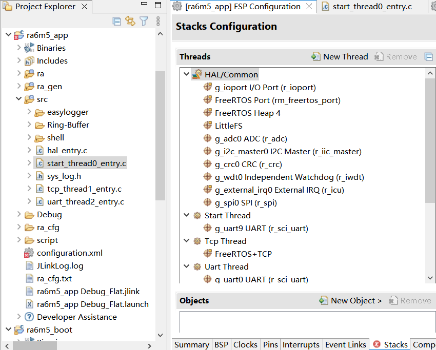
| app线程 | 说明 |
|---|---|
| 线程0 start_thread0_entry | 日志和监控 |
| 线程1 tcp_thread1_entry | 云端通讯 |
| 线程2 uart_thread2_entry | 本地通讯 |
| 线程0 start_thread0_entry | 说明 |
|---|---|
| 移植easylogger | 日志分级别 |
| fsp littlefs | dataflash保存经常变化数据 |
| 移植shell | 监控系统状态 |
| 移植ring buffer | shell串口数据依赖 |
流程图：
复制线程源码：
void start_thread0_entry(void *pvParameters)
{
FSP_PARAMETER_NOT_USED (pvParameters);
///////////////////////////////////////////////////////////////////////////
fsp_err_t err = FSP_SUCCESS;
ring_buffer_init(&uart9_RxBuf);
err = g_uart9.p_api->open(&g_uart9_ctrl, &g_uart9_cfg);
if(err == FSP_SUCCESS)
{
const char *log_uart_init = "\napp log uart init successed!!!\r\n";
g_uart9.p_api->write(&g_uart9_ctrl, (uint8_t*)log_uart_init, strlen(log_uart_init));
while(uart_send_complete_flag == false)
{;}
uart_send_complete_flag = false;
}
printf("\nprintf redirect successed!!!\ndate:%s\ntime:%s\nfile:%s\nfunc:%s,line:%d\nhello world!\n", __DATE__, __TIME__, __FILE__, __FUNCTION__, __LINE__);
fsp_pack_version_t version;
R_FSP_VersionGet(&version);
const uint8_t versionstr[] = FSP_VERSION_BUILD_STRING;
printf("fsp:%s", versionstr);
const uint32_t bspVCC = BSP_CFG_MCU_VCC_MV;
const uint32_t bspStack = BSP_CFG_STACK_MAIN_BYTES;
const uint32_t bspHeap = BSP_CFG_HEAP_BYTES;
printf("bspVCC=%d MV,bspStack:%d Byte,bspHeap=%d Byte", (int)bspVCC, (int)bspStack, (int)bspHeap);
volatile const bsp_unique_id_t * uniqueID;
uniqueID = R_BSP_UniqueIdGet();
printf("uniqueID:%08X%08X%08X%08X", (unsigned int)uniqueID->unique_id_words[0],(unsigned int)uniqueID->unique_id_words[1],(unsigned int)uniqueID->unique_id_words[2],(unsigned int)uniqueID->unique_id_words[3]);
printf("MAC:%02X%02X%02X%02X%02X%02X",g_ether0.p_cfg->p_mac_address[0],g_ether0.p_cfg->p_mac_address[1],g_ether0.p_cfg->p_mac_address[2],g_ether0.p_cfg->p_mac_address[3],g_ether0.p_cfg->p_mac_address[4],g_ether0.p_cfg->p_mac_address[5]);
///////////////////////////////////////////////////////////////////////////
#if 1//test
/* if littlefs enable thread safe,must copy to common_data.c g_rm_littlefs0_lfs_cfg,FSP 4.4.0 bug
#ifdef LFS_THREAD_SAFE
.lock = &rm_littlefs_flash_lock,
.unlock = &rm_littlefs_flash_unlock,
#endif
*/
err = g_rm_littlefs0.p_api->open(&g_rm_littlefs0_ctrl, &g_rm_littlefs0_cfg);
if(FSP_SUCCESS != err)
{
printf("g_rm_littlefs0.p_api->open err=%d\r\n", err);
g_rm_littlefs0.p_api->close(&g_rm_littlefs0_ctrl);
}
printf("g_rm_littlefs0.p_api->open successed!!!\n");
err = lfs_mount(&g_rm_littlefs0_lfs, &g_rm_littlefs0_lfs_cfg);
if( err )
{
printf("lfs_mount err=%d\r\n", err);
lfs_format(&g_rm_littlefs0_lfs, &g_rm_littlefs0_lfs_cfg);
lfs_mount(&g_rm_littlefs0_lfs, &g_rm_littlefs0_lfs_cfg);
}
// read current count
uint32_t boot_count2 = 0;
lfs_file_open(&g_rm_littlefs0_lfs, &g_log_lfs_file, "boot_count2", LFS_O_RDWR | LFS_O_CREAT);
lfs_file_read(&g_rm_littlefs0_lfs, &g_log_lfs_file, &boot_count2, sizeof(boot_count2));
printf("g_log_lfs_file.id ID:%d\r\n", g_log_lfs_file.id);
// update boot count
boot_count2 += 1;
lfs_file_rewind(&g_rm_littlefs0_lfs, &g_log_lfs_file);
lfs_file_write(&g_rm_littlefs0_lfs, &g_log_lfs_file, &boot_count2, sizeof(boot_count2));
// remember the storage is not updated until the file is closed successfully
lfs_file_close(&g_rm_littlefs0_lfs, &g_log_lfs_file);
uint32_t txt2 = 0;
lfs_file_open(&g_rm_littlefs0_lfs, &g_log_lfs_file, "txt2", LFS_O_RDWR | LFS_O_CREAT);
lfs_file_read(&g_rm_littlefs0_lfs, &g_log_lfs_file, &txt2, sizeof(txt2));
printf("ID:%d\r\n", g_log_lfs_file.id);
// update boot count
txt2 += 1;
lfs_file_rewind(&g_rm_littlefs0_lfs, &g_log_lfs_file);
lfs_file_write(&g_rm_littlefs0_lfs, &g_log_lfs_file, &txt2, sizeof(txt2));
// remember the storage is not updated until the file is closed successfully
lfs_file_close(&g_rm_littlefs0_lfs, &g_log_lfs_file);
// release any resources we were using
lfs_unmount(&g_rm_littlefs0_lfs);
// print the boot count
printf("boot_count2: %ld\r\n", boot_count2);
printf("txt2: %ld\r\n", txt2);
printf("\r\n");
#endif
///////////////////////////////////////////////////
///
elog_init();
#if 0
elog_set_fmt(ELOG_LVL_ASSERT, ELOG_FMT_ALL & ~ELOG_FMT_P_INFO);
elog_set_fmt(ELOG_LVL_ERROR, ELOG_FMT_LVL | ELOG_FMT_TAG | ELOG_FMT_TIME);
elog_set_fmt(ELOG_LVL_WARN, ELOG_FMT_LVL | ELOG_FMT_TAG | ELOG_FMT_TIME);
elog_set_fmt(ELOG_LVL_INFO, ELOG_FMT_LVL | ELOG_FMT_TAG | ELOG_FMT_TIME);
elog_set_fmt(ELOG_LVL_DEBUG, ELOG_FMT_ALL & ~(ELOG_FMT_FUNC | ELOG_FMT_P_INFO));
elog_set_fmt(ELOG_LVL_VERBOSE, ELOG_FMT_ALL & ~(ELOG_FMT_FUNC | ELOG_FMT_P_INFO));
#else
/* set EasyLogger log format */
elog_set_fmt(ELOG_LVL_ASSERT, ELOG_FMT_ALL);
elog_set_fmt(ELOG_LVL_ERROR, ELOG_FMT_LVL | ELOG_FMT_TAG | ELOG_FMT_TIME);
elog_set_fmt(ELOG_LVL_WARN, ELOG_FMT_LVL | ELOG_FMT_TAG | ELOG_FMT_TIME);
elog_set_fmt(ELOG_LVL_INFO, ELOG_FMT_LVL | ELOG_FMT_TAG | ELOG_FMT_TIME);
elog_set_fmt(ELOG_LVL_DEBUG, ELOG_FMT_ALL & ~(ELOG_FMT_FUNC | ELOG_FMT_T_INFO | ELOG_FMT_P_INFO));
elog_set_fmt(ELOG_LVL_VERBOSE, ELOG_FMT_ALL & ~(ELOG_FMT_FUNC | ELOG_FMT_T_INFO | ELOG_FMT_P_INFO));
#endif
//start easylogger
elog_start();
vTaskDelay(1000);
#if 1//test easylogger
log_a("Hello EasyLogger!");//断言 assert
// A/NO_TAG [10:08:12 pid:1008 tid:24] (../Core/Src/freertos.c LED_TASK03:207)Hello EasyLogger!
log_e("Hello EasyLogger!");//error
// E/NO_TAG [10:08:12] Hello EasyLogger!
log_w("Hello EasyLogger!");//waring
// W/NO_TAG [10:08:12] Hello EasyLogger!
log_i("Hello EasyLogger!");//info
// I/NO_TAG [10:08:12] Hello EasyLogger!
log_d("Hello EasyLogger!");//dbug
// D/NO_TAG [10:08:12] (../Core/Src/freertos.c:211)Hello EasyLogger!
log_v("Hello EasyLogger!");//日志
//V/NO_TAG [10:08:12] (../Core/Src/freertos.c:212)Hello EasyLogger!
uint8_t buf[256]= {0};
uint16_t i = 0;
for (i = 0; i < sizeof(buf); i++)
{
buf[i] = (uint8_t)i;
}
elog_hexdump("test", 16, buf, sizeof(buf));
log_d("\nTEXT END!\n");
#endif
///////////////////////////////////////////////////////////////////////////
//init simple shell, then start it
shell_init();
shell_register("shell", shell);
log_i("shell: welcome to shell ra6m5");
/* TODO: add your own code here */
while (1)
{
//get strings from uart0 rx ring buffer
if(!ring_buffer_is_empty(&uart9_RxBuf))
{
//get strings from uart0 rx ring buffer
uint8_t cnt = ring_buffer_dequeue_arr(&uart9_RxBuf, (char*)rx, sizeof(uart9_RxBuf.buffer));
//log_i("rx=%s cnt=%d",rx,cnt);//print input string for test
//shell parse, shell register callback 'shell'
uint8_t res = shell_parse((char *)rx, cnt);
//shell parse result informations
if (res == 0)
{
/* run success */
}
else if (res == 1)
{
log_i("shell: run failed.\n");
}
else if (res == 2)
{
log_i("shell: unknown command.\n");
}
else if (res == 3)
{
log_i("shell: length is too long.\n");
}
else if (res == 4)
{
log_i("shell: pretreat failed.\n");
}
else if (res == 5)
{
log_i("shell: param is invalid.\n");
}
else
{
log_i("shell: unknown status code.\n");
}
}
vTaskDelay (100);
}
}
7.2.3.12 boot+app测试效果
boot log uart init successed!!!
printf redirect successed!!!
date:Jun 18 2023
time:20:12:37
file:../src/boot_thread0_entry.c
func:boot_thread0_entry,line:226
hello world!
RSTSR0=0 RSTSR1=0 RSTSR2=0
************************ Cold start ************************
fwUpgradeFlg=255
**************************************
**********JUMP TO APP:0x10000**********
**************************************
app log uart init successed!!!
printf redirect successed!!!
date:Jun 18 2023
time:19:53:43
file:../src/start_thread0_entry.c
func:start_thread0_entry,line:439
hello world!
fsp:Built with Renesas Advanced Flexible Software Package version 4.4.0bspVCC=3300 MV,bspStack:8192 Byte,bspHeap=8192 ByteuniqueID:2D033F8E5736363299DA4E364E4B292DMAC:001122334455g_rm_littlefs0.p_api->open successed!!!
g_log_lfs_file.id ID:0
ID:1
boot_count2: 181
txt2: 180
I/elog [42] EasyLogger V2.2.99 is initialize success.
I/TCP_TAG [47] tcp_thread1_entry
I/TCP_TAG [50] tcp_thread1_thread
I/UART_TAG [53] uart_thread2_entry
I/UART_TAG [56] uart_thread2_thread
A/INIT_TAG [1047 ] (../src/start_thread0_entry.c:540 start_thread0_entry)Hello EasyLogger!
E/INIT_TAG [1055] Hello EasyLogger!
W/INIT_TAG [1058] Hello EasyLogger!
I/INIT_TAG [1061] Hello EasyLogger!
D/INIT_TAG [1064] (../src/start_thread0_entry.c 548)Hello EasyLogger!
V/INIT_TAG [1070] (../src/start_thread0_entry.c 550)Hello EasyLogger!
D/HEX test: 0000-000F: 00 01 02 03 04 05 06 07 08 09 0A 0B 0C 0D 0E 0F ................
D/HEX test: 0010-001F: 10 11 12 13 14 15 16 17 18 19 1A 1B 1C 1D 1E 1F ................
D/HEX test: 0020-002F: 20 21 22 23 24 25 26 27 28 29 2A 2B 2C 2D 2E 2F !"#$%&'()*+,-./
D/HEX test: 0030-003F: 30 31 32 33 34 35 36 37 38 39 3A 3B 3C 3D 3E 3F 0123456789:;<=>?
D/HEX test: 0040-004F: 40 41 42 43 44 45 46 47 48 49 4A 4B 4C 4D 4E 4F @ABCDEFGHIJKLMNO
D/HEX test: 0050-005F: 50 51 52 53 54 55 56 57 58 59 5A 5B 5C 5D 5E 5F PQRSTUVWXYZ[\]^_
D/HEX test: 0060-006F: 60 61 62 63 64 65 66 67 68 69 6A 6B 6C 6D 6E 6F `abcdefghijklmno
D/HEX test: 0070-007F: 70 71 72 73 74 75 76 77 78 79 7A 7B 7C 7D 7E 7F pqrstuvwxyz{|}~.
D/HEX test: 0080-008F: 80 81 82 83 84 85 86 87 88 89 8A 8B 8C 8D 8E 8F ................
D/HEX test: 0090-009F: 90 91 92 93 94 95 96 97 98 99 9A 9B 9C 9D 9E 9F ................
D/HEX test: 00A0-00AF: A0 A1 A2 A3 A4 A5 A6 A7 A8 A9 AA AB AC AD AE AF ................
D/HEX test: 00B0-00BF: B0 B1 B2 B3 B4 B5 B6 B7 B8 B9 BA BB BC BD BE BF ................
D/HEX test: 00C0-00CF: C0 C1 C2 C3 C4 C5 C6 C7 C8 C9 CA CB CC CD CE CF ................
D/HEX test: 00D0-00DF: D0 D1 D2 D3 D4 D5 D6 D7 D8 D9 DA DB DC DD DE DF ................
D/HEX test: 00E0-00EF: E0 E1 E2 E3 E4 E5 E6 E7 E8 E9 EA EB EC ED EE EF ................
D/HEX test: 00F0-00FF: F0 F1 F2 F3 F4 F5 F6 F7 F8 F9 FA FB FC FD FE FF ................
D/INIT_TAG [1208] (../src/start_thread0_entry.c 561)
TEXT END!
I/INIT_TAG [1214] shell: welcome to shell ra6m5
I/TCP_TAG [2376475] tcp_thread1_thread
I/UART_TAG [2376481] uart_thread2_thread
I/INIT_TAG [2380884] Usage:
I/INIT_TAG [2380886] shell (-h | --help)
I/INIT_TAG [2380890] shell (-i | --information)
I/INIT_TAG [2380894] shell (-g highwater | --get=highwater)
I/INIT_TAG [2380899] shell (-g freeheap | --get=freeheap)
I/INIT_TAG [2380905] shell (-g dietemp | --get=dietemp)
I/INIT_TAG [2380910] Options:
I/INIT_TAG [2380912] --times=<num> Set the running times.([default: 3])
I/TCP_TAG [2381478] tcp_thread1_thread
I/UART_TAG [2381484] uart_thread2_thread
I/TCP_TAG [2386481] tcp_thread1_thread
I/UART_TAG [2386487] uart_thread2_thread
I/TCP_TAG [2391484] tcp_thread1_thread
I/UART_TAG [2391490] uart_thread2_thread
八、生成库和使用库
8.1 方法
e2s帮助功能:生成库+创建CDT
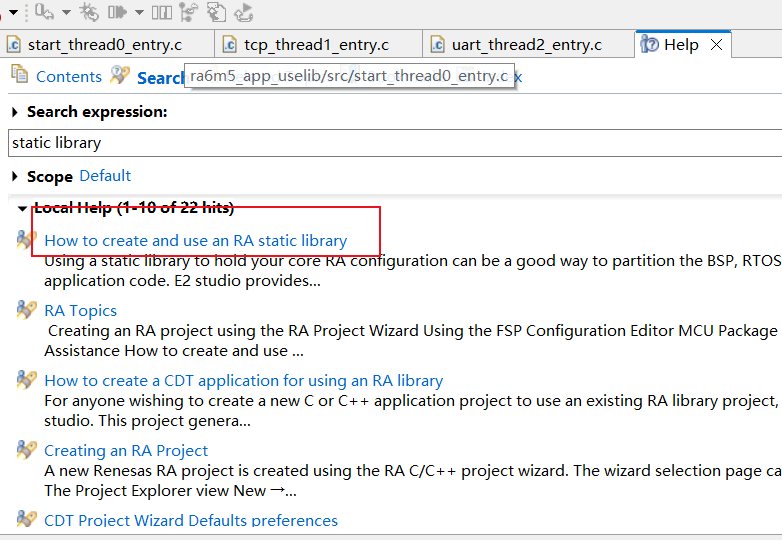
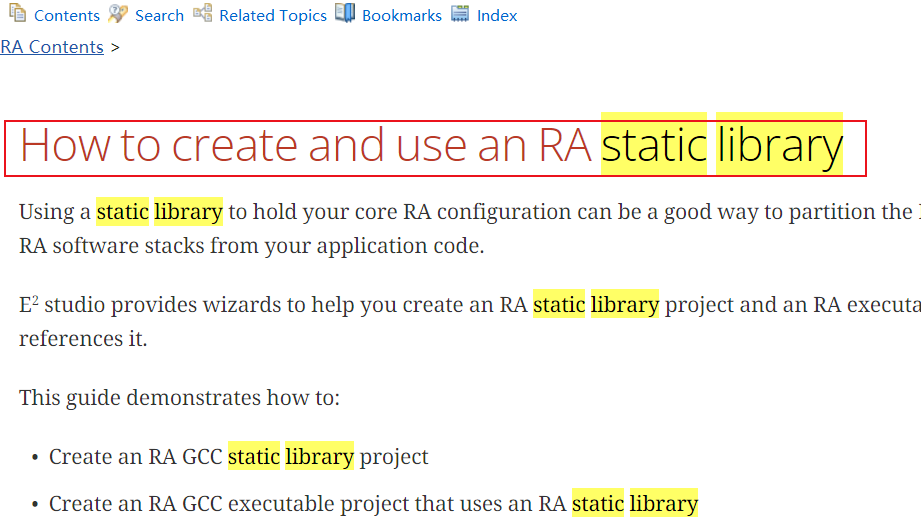

8.2 过程
生成库
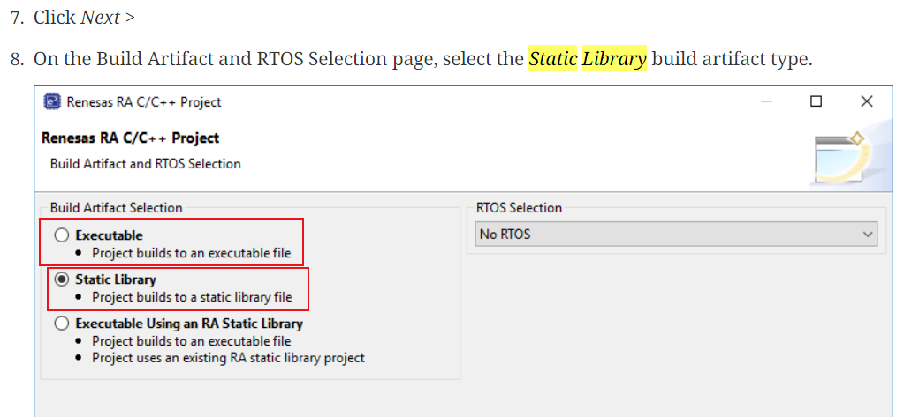
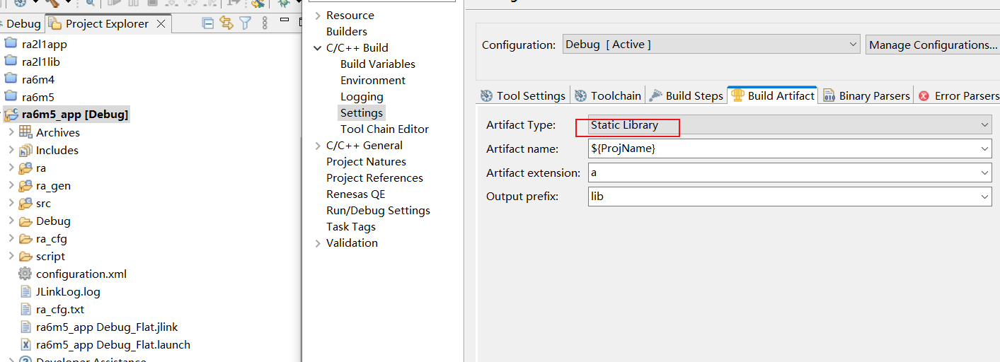
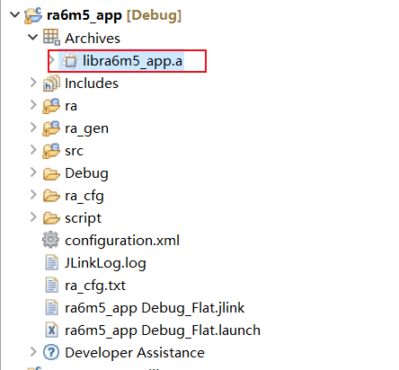
创建CDT工程
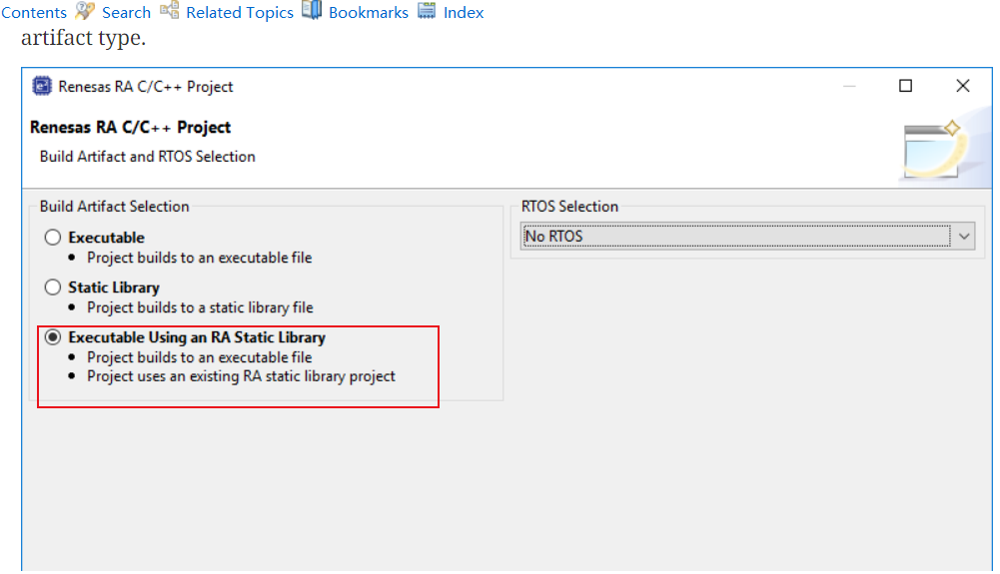
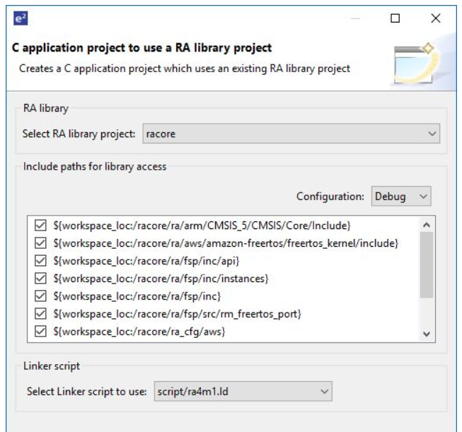
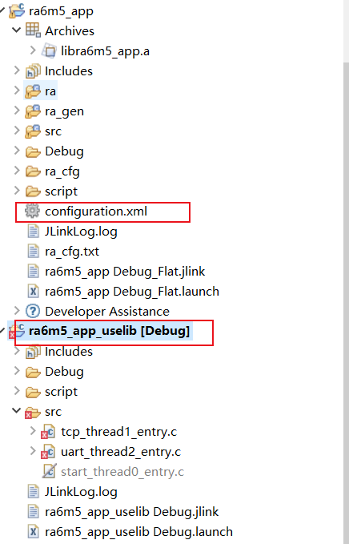
链接库
8.3 测试结果
#include "tcp_thread1.h"
#define LOG_TAG "TCP_TAG"
#define LOG_LVL ELOG_LVL_VERBOSE
#include "elog.h"
/* Tcp Thread entry function */
/* pvParameters contains TaskHandle_t */
void tcp_thread1_entry(void *pvParameters)
{
FSP_PARAMETER_NOT_USED (pvParameters);
log_i("tcp_thread1_entry");
/* TODO: add your own code here */
while (1)
{
log_i("tcp_thread1_thread in app test");
vTaskDelay (5000);
}
}
#include "uart_thread2.h"
#define LOG_TAG "UART_TAG"
#define LOG_LVL ELOG_LVL_VERBOSE
#include "elog.h"
/* Uart Thread entry function */
/* pvParameters contains TaskHandle_t */
void uart_thread2_entry(void *pvParameters)
{
FSP_PARAMETER_NOT_USED (pvParameters);
log_i("uart_thread2_entry");
/* TODO: add your own code here */
while (1)
{
log_i("uart_thread2_thread in app test");
vTaskDelay (5000);
}
}
链接选项修改
--specs=rdimon.specs -Wl,--whole-archive -lra6m5_app -Wl,--no-whole-archive
-Wl,--whole-archive -lra6m5_app -Wl,--no-whole-archive
app log uart init successed!!!
printf redirect successed!!!
date:Jun 29 2023
time:18:18:36
file:../src/start_thread0_entry.c
func:start_thread0_entry,line:438
hello world!
fsp:Built with Renesas Advanced Flexible Software Package version 4.4.0bspVCC=3300 MV,bspStack:8192 Byte,bspHeap=8192 ByteuniqueID:2D033F8E5736363299DA4E364E4B292DMAC:001122334455g_rm_littlefs0.p_api->open successed!!!
g_log_lfs_file.id ID:0
ID:1
boot_count2: 4
txt2: 4
I/elog [43] EasyLogger V2.2.99 is initialize success.
I/TCP_TAG [48] tcp_thread1_entry
I/TCP_TAG [51] tcp_thread1_thread in app test
I/UART_TAG [55] uart_thread2_entry
I/UART_TAG [58] uart_thread2_thread in app test
A/INIT_TAG [1048 ] (../src/start_thread0_entry.c:539 start_thread0_entry)Hello EasyLogger!
E/INIT_TAG [1056] Hello EasyLogger!
W/INIT_TAG [1059] Hello EasyLogger!
I/INIT_TAG [1062] Hello EasyLogger!
D/INIT_TAG [1065] (../src/start_thread0_entry.c 547)Hello EasyLogger!
V/INIT_TAG [1071] (../src/start_thread0_entry.c 549)Hello EasyLogger!
D/HEX test: 0000-000F: 00 01 02 03 04 05 06 07 08 09 0A 0B 0C 0D 0E 0F ................
D/HEX test: 0010-001F: 10 11 12 13 14 15 16 17 18 19 1A 1B 1C 1D 1E 1F ................
D/HEX test: 0020-002F: 20 21 22 23 24 25 26 27 28 29 2A 2B 2C 2D 2E 2F !"#$%&'()*+,-./
D/HEX test: 0030-003F: 30 31 32 33 34 35 36 37 38 39 3A 3B 3C 3D 3E 3F 0123456789:;<=>?
D/HEX test: 0040-004F: 40 41 42 43 44 45 46 47 48 49 4A 4B 4C 4D 4E 4F @ABCDEFGHIJKLMNO
D/HEX test: 0050-005F: 50 51 52 53 54 55 56 57 58 59 5A 5B 5C 5D 5E 5F PQRSTUVWXYZ[\]^_
D/HEX test: 0060-006F: 60 61 62 63 64 65 66 67 68 69 6A 6B 6C 6D 6E 6F `abcdefghijklmno
D/HEX test: 0070-007F: 70 71 72 73 74 75 76 77 78 79 7A 7B 7C 7D 7E 7F pqrstuvwxyz{|}~.
D/HEX test: 0080-008F: 80 81 82 83 84 85 86 87 88 89 8A 8B 8C 8D 8E 8F ................
D/HEX test: 0090-009F: 90 91 92 93 94 95 96 97 98 99 9A 9B 9C 9D 9E 9F ................
D/HEX test: 00A0-00AF: A0 A1 A2 A3 A4 A5 A6 A7 A8 A9 AA AB AC AD AE AF ................
D/HEX test: 00B0-00BF: B0 B1 B2 B3 B4 B5 B6 B7 B8 B9 BA BB BC BD BE BF ................
D/HEX test: 00C0-00CF: C0 C1 C2 C3 C4 C5 C6 C7 C8 C9 CA CB CC CD CE CF ................
D/HEX test: 00D0-00DF: D0 D1 D2 D3 D4 D5 D6 D7 D8 D9 DA DB DC DD DE DF ................
D/HEX test: 00E0-00EF: E0 E1 E2 E3 E4 E5 E6 E7 E8 E9 EA EB EC ED EE EF ................
D/HEX test: 00F0-00FF: F0 F1 F2 F3 F4 F5 F6 F7 F8 F9 FA FB FC FD FE FF ................
D/INIT_TAG [1209] (../src/start_thread0_entry.c 560)
TEXT END!
I/INIT_TAG [1214] shell: welcome to shell ra6m5
I/TCP_TAG [5055] tcp_thread1_thread in app test
I/UART_TAG [5062] uart_thread2_thread in app test
I/TCP_TAG [10059] tcp_thread1_thread in app test
I/UART_TAG [10066] uart_thread2_thread in app test
I/TCP_TAG [15063] tcp_thread1_thread in app test
I/UART_TAG [15070] uart_thread2_thread in app test
九、RA6M5“工厂生产流程”
抛砖引玉。这里把工厂烧写固件、设置读保护、产测流程统称为“工厂生产流程”。主要介绍工厂烧写、产测流程的做法和注意事项。引出简介瑞萨DLM芯片生命周期管理、Arm® （CM33）的TrustZone® 。
9.1 框图
这是最常见MCU工厂烧录方式：
a、使用治具，通过segger jlink或瑞萨RFP Jlink/串口烧写bin/hex等固件文件 b、设置flash读保护（DLM切换状态），保护固件被读取破解 c、产测流程，确保pcba正常。常把上述软件嵌入到公司的系统软件中。
框图：

9.2 瑞萨Renesas Flash Programmer（RFP）
正常模式：RFP可以读写RA6M5固件（同segger j-flash） 引导模式：RFP可以读写RA6M5固件、读写配置、DLM关联相关功能等等
9.2.1 RFP下载


9.2.2 相关文档
1、Renesas Flash Programmer V3.12
2、Renesas RA Family Standard Boot Firmware for the RA family MCUs Based on Arm® Cortex®-M33
3、Renesas RA Family Device Lifecycle Management Key Injection
4、瑞萨 RA 产品家族 器件生命周期管理密钥安装
5、安全密钥管理工具 V.1.03 用户手册
6、Renesas RA Family Implementing Production Programming Tools for
RA Cortex-M33 with Device Lifecycle Management
9.3 RA启动模式

9.3.1 boot硬件接口


硬件设计建议预留MD引脚和jtag接口，而非单独swd接口。
9.3.2 boot软件接口
1、uart/usb boot协议
2、RFPV3.exe、rfp-cli.exe、
3、rpe.exe

9.4 RA DLM（生命周期管理）
1、写入.rpd分区文件
2、读保护就是使用RFP切换CM/SSD模式切换到DPL模式
9.4.1 .rpd分区文件
rpd文件会根据应用大小自动修改，只需用RFP烧写即可
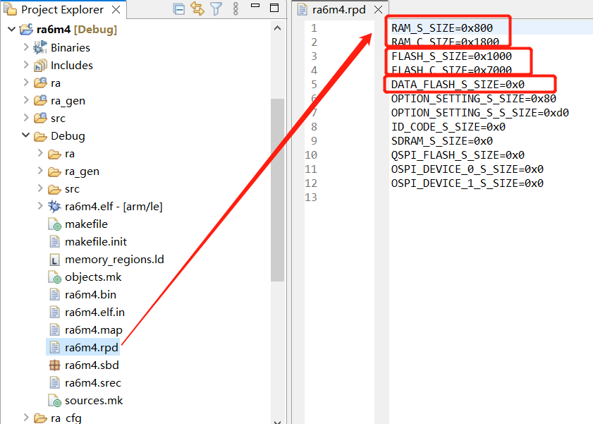
9.4.2 DLM介绍
9.4.2.1 DLM模式转换图

9.4.2.2 DLM模式说明图


9.4.2.3 DLM-DPL部署到客户现场说明图

9.4.2.4 DLM写入秘钥（略）
1、秘钥用于从DPL部署模式返回到SSD安全软件开发模式，即可以读写flash和相关配置。
2、未写入秘钥则无法返回SSD模式，只能擦除整片flash（Initialize命令）
3、非明文写入秘钥，需要使用瑞萨相关工具，不详细介绍了
9.4.2.5 DLM结合公司项目开发
| DLM模式| DLM备注| 公司项目阶段 | 权限 |
| -- | -- | -- | --- | --- |
|CM
芯片出厂| 用keil&IAR开发，始终为该模式 | EVT |任意读写固件|
|SSD
安全软件开发| 用e2s开发，自动切换到SSD | DVT | 公司可信任的开发人员 |
|NSECSD
非安全软件开发|需要手动切换| DVT | 一般开发人员、测试人员 |
|DPL
LCK_DBG
LCK_BOOT
用户现场|工厂生产流程
保护公司IP| PVT/MP | 一般用户 |
|RMA_REQ
RMA_ACK
退货给瑞萨|故障分析|-| 瑞萨 |
9.4.2.6 演示RFP的使用
1、RFP GUI
RFPV3.exe和RFPV3.Console.exe
2、rfp-cli.exe
EntryNotFound (FileSystemError): Error: ENOENT: no such file or directory, open 'd:\Users\jerry\Documents\GitHub\Renesas\RA6M5\images\rfp-cli.exe'
3、rpe.exe
EntryNotFound (FileSystemError): Error: ENOENT: no such file or directory, open 'd:\Users\jerry\Documents\GitHub\Renesas\RA6M5\images\rpe.exe'
4、RFP boot模式串口通讯协议
Renesas RA Family Standard Boot Firmware for the RA family MCUs Based on Arm® Cortex®-M33
9.4.2.7 例程打印DLM模式和分区
debug下载时候可以在console可以看见flash、sram分区的大小


例程代码可用于用户产测程序：
const char dlmlist[] = "0x1: CM 0x2: SSD 0x3: NSECSD 0x4: DPL 0x5: LCK_DBG 0x6: LCK_BOOT 0x7: RMA_REQ 0x8: RMA_ACK ";
printf("%s\n", dlmlist);
uint8_t dlm = R_PSCU->DLMMON_b.DLMMON;
char dlm_str[20] = {0};
sprintf(dlm_str, "dlm mode:%d\n", dlm);
printf("%s", dlm_str);
uint8_t cfs2 = R_PSCU->CFSAMONA_b.CFS2;
sprintf(dlm_str, "cfs2:%d\n", cfs2);
printf("%s", dlm_str);
uint8_t cfs1 = R_PSCU->CFSAMONB_b.CFS1;
sprintf(dlm_str, "cfs1:%d\n", cfs1);
printf("%s", dlm_str);
uint8_t dfs = R_PSCU->DFSAMON_b.DFS;
sprintf(dlm_str, "dfs:%d\n", dfs);
printf("%s", dlm_str);
uint8_t ss2 = R_PSCU->SSAMONA_b.SS2;
sprintf(dlm_str, "ss2:%d\n", ss2);
printf("%s", dlm_str);
uint8_t ss1 = R_PSCU->SSAMONB_b.SS1;
sprintf(dlm_str, "ss1:%d\n", ss1);
printf("%s", dlm_str);
十、发布新固件---Release和Debug版本的差异
产品/项目小批量后会发布新固件，从而迭代新功能和修复bug等。可以通过如下方式升级：
- boot+app工厂引导在线升级
- 拉低MD引脚进入boot引导模式，串口升级
- 直接通过jtag/swd烧写
所以，就需要发布新固件！
10.1 公司自行管理维护
宏定义、版本号、git、svn、测试、发布、烧录、升级
10.2 Release和Debug版本的差异
10.2.1 引用文章
Release和Debug版本的差异
IAR中 Debug 和 Release 区别是什么？
主要功能与目的：
- 代码优化等级
- 预处理-调试信息
- 固件生成与合并
- 版本号管理
- 重命名固件
- 校验
- 备份
10.2.2 个人观点
- Release和Debug就是IDE给开发者提供一种管理调试和发布软件的功能。
- 个人不推荐使用该功能。
- 发布过程中可能碰到问题
- 依赖IDE、不利于中间层构建。
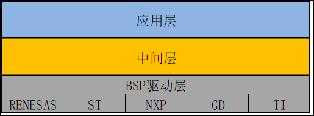
10.3 version存储
10.3.1 e2studio .version Section
SECTIONS
{
......
.text :
{
__tz_FLASH_S = ABSOLUTE(FLASH_START);
__ROM_Start = .;
......
KEEP(*(.version))
......
}
......
}
#define FSP_SECTION_VERSION ".version"
/* BSP version structure. */
const fsp_version_t g_bsp_version =
{
.api_version_minor = BSP_API_VERSION_MINOR,
.api_version_major = BSP_API_VERSION_MAJOR,
.code_version_major = BSP_CODE_VERSION_MAJOR,
.code_version_minor = BSP_CODE_VERSION_MINOR
};
/* FSP pack version structure. */
static BSP_DONT_REMOVE const fsp_pack_version_t g_fsp_version BSP_PLACE_IN_SECTION (FSP_SECTION_VERSION) =
{
.minor = FSP_VERSION_MINOR,
.major = FSP_VERSION_MAJOR,
.build = FSP_VERSION_BUILD,
.patch = FSP_VERSION_PATCH
};
/* Public FSP version name. */
static BSP_DONT_REMOVE const uint8_t g_fsp_version_string[] BSP_PLACE_IN_SECTION(FSP_SECTION_VERSION) =
FSP_VERSION_STRING;
/* Unique FSP version ID. */
static BSP_DONT_REMOVE const uint8_t g_fsp_version_build_string[] BSP_PLACE_IN_SECTION(FSP_SECTION_VERSION) =
FSP_VERSION_BUILD_STRING;
10.3.2 绝对定位__attribute__((at()))
__attribute__((at()))
MDK AC5 AC6不同，不同IDE也有差异
使用__attribute__((at()))来进行绝对定位
typedef struct {
uint32_t magic_word; /*!< Magic word ESP_APP_DESC_MAGIC_WORD */
uint32_t secure_version; /*!< Secure version */
uint32_t reserv1[2]; /*!< --- */
char version[32]; /*!< Application version */
char project_name[32]; /*!< Project name */
char time[16]; /*!< Compile time */
char date[16]; /*!< Compile date*/
char idf_ver[32]; /*!< Version IDF */
uint8_t app_elf_sha256[32]; /*!< sha256 of elf file */
uint32_t reserv2[20]; /*!< --- */
} sprt_app_desc_t;
/* MDK AC5 */
__attribute__((at(0x08000000))) const uint32_t cnt;
//cnt 0x08000000 Data 4 main.o(.ARM.__AT_0x08000000)
__attribute__((at(0x08000004))) const sprt_app_desc_t sprt_app_desc = {
.version = "version",
.time = __TIME__,
.date = __DATE__,
};
//sprt_app_desc 0x08000004 Data 256 main.o(.ARM.__AT_0x08000004)
__attribute__((at(0x20000000))) sprt_app_desc_t sprt_app_desc = {
.version = "version",
.time = __TIME__,
.date = __DATE__,
};
//sprt_app_desc 0x20000000 Data 256 main.o(.ARM.__AT_0x20000000)
__attribute__((at(0x20001000))) uint32_t cnt;
//cnt 0x20001000 Data 4 main.o(.ARM.__AT_0x20001000)
/* MDK AC6 */
/* section 等价 __section__ */
__attribute__((section(".ARM.__at_0x08000000"))) const uint32_t cnt;
//cnt 0x08000000 Data 4 main.o(.ARM.__at_0x08000000)
__attribute__((__section__(".ARM.__at_0x08000004"))) const sprt_app_desc_t sprt_app_desc = {
.version = "version",
.time = __TIME__,
.date = __DATE__,
};
//sprt_app_desc 0x08000004 Data 256 main.o(.ARM.__at_0x08000004)
__attribute__((section(".ARM.__at_0x20000000"))) uint32_t cnt;
//cnt 0x20000000 Data 4 main.o(.ARM.__at_0x20000000)
__attribute__((section(".ARM.__at_0x20000004"))) sprt_app_desc_t sprt_app_desc = {
.version = "version",
.time = __TIME__,
.date = __DATE__,
};
//sprt_app_desc 0x20000004 Data 256 main.o(.ARM.__at_0x20000004)